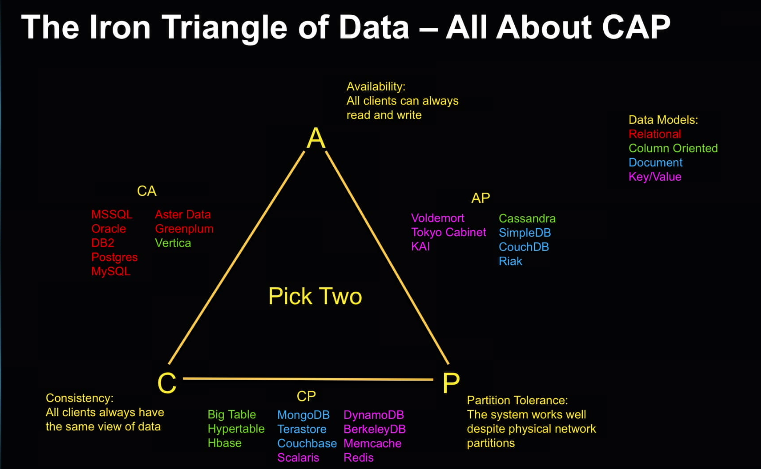
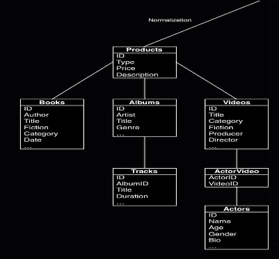
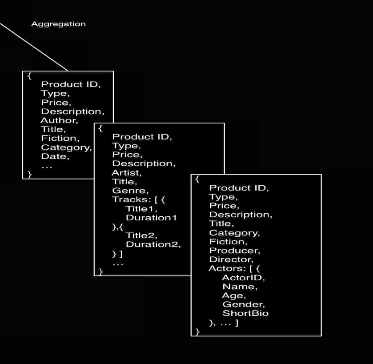

Posted on February 20, 2016
NoSQL
Originally referenced as "no SQL", it is now described as "Not Only SQL." That is because while the data model by NoSQL is of a distributed data across clusters of nodes, it still accepts the structured query language (SQL) commands. Now to understand its rise, we will first look at its history.
History
SQL's rose to be the preferred method of data modeling in the 80's and 90's due to the need of creating an efficient way of storing data, since data storage was an adjustable cost while computing power was viewed as a fixed cost. Relational databases were used due to its storage model of limiting duplicate copies of the data by storing duplicates in table of their own, and then making a connection to the original table (a relationship). That remained true during the intranet era, but during the dot com boom and technological advances in storage handling, technological entities realized that the relational database did not scale out effectively, but rather scaled up. Scaling up ment purchasing expensive new hardware and migrating the data, thus resulting in downtime and changing the economic burden from storage prohibitive to computational power prohibitive. As a result, the NoSQL movement began to address this problem.
SQL
Like stated above, SQL uses a schema, or structure, to place all of the data. Its focus is to reduce storage space and complains when redundant data is placed in the schema. Because of this, SQL databases were originally designed for use in a single computer, thus when the model is placed on a dristributed system, SQL does not function optimably and many of the benefits are lost.
NoSQL
On the other hand, NoSQL technology is built from the ground up to be distributed, and thus breaks the schema rules. The notion is that there is no schema, but rather an implied schema, where data redundancy is accepted and the work of obtaining a results from queries is produced from aggregating objects over nodes is key to its current success. The central idea behind distributed databases is that they treat data as objects and aggregate the results, with the most requested objects filtering to the top, thus when additional nodes come online to address any lag in the system, the aggregates can be distributed throughout.
The Solutions
Like stated above, NoSQL was the answer to the question of how to handle big data and scale out effectively. But their are different problems, and no one answer that fits all solution. Take a look at the CAP diagram below to see why.
NoSQL Objets
But what do they look like? And how do they differ from the SQL? Let's look at the figure below.
 As we can see, SQL (left) will have challenges when the database is moved outside of a single unit, because the schema must be maintained in order for the model to function, but the NoSQL does not. The NoSQL's implicit schema is evident from the property names, thus a schema exists but not rigourously inforced.
Benefits of NoSQL
Aside from being able to distribute the database through multiple nodes (computers), we are also able to add additional properties at any point without breaking the database. In the example above, its a Document-based NoSQL database that stores the data in JSON objects; this allows us to simply add properties, but with SQL, you would have to update the entire table, and fill in the values that have no data.
Additionally, relational databases need a little more hands on when the data is special, like video and sound files, while NoSQL does not care what type of data is placed inside the object, it just handles objects.